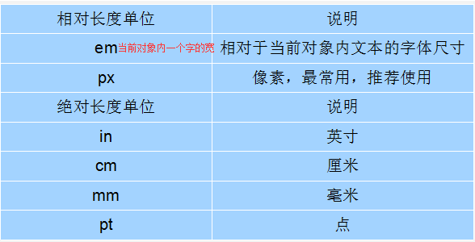
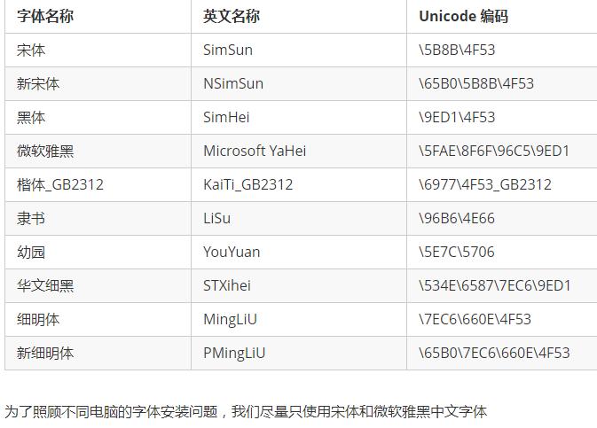

font-size:字号大小,常用px,就是文字的高度

font-family:字体
使用一个字体
使用多个字体multi:中间以逗号隔开，表示如果浏览器不支持第一个字体，则会尝试下一个，直到找到合适的字体;如果文字中既有中文又有英文则中文找第一个系统支持的中文字体，英文找系统支持的第一个英文字体，例如这里中文的字体是华文行楷英文的字体是Arial
Unicode字体

使用Unicode字体：效率更高
font-weight:字体粗细
通过css实现字体粗细，html也有b和strong标签能实现字体粗细。
font-weight属性用于定义字体的粗细，其可用属性值：normal、bold、bolder、lighter、100~900（100的整数倍）。
数字 400 等价于 normal，而 700 等价于 bold。 但是我们更喜欢用数字来表示。
font-style:字体风格:字体是否倾斜
font-style:字体风格:字体是否倾斜,html标签的i和em也能实现文字倾斜
normal：默认值，浏览器会显示标准的字体样式。
italic：浏览器会显示斜体的字体样式。
oblique：浏览器会显示倾斜的字体样式和italic我看着没区别。
font:综合设置字体样式
font:综合设置字体样式
选择器{font: font-style font-weight font-size/line-height font-family;};
使用font属性时，必须按上面语法格式中的顺序书写，不能更换顺序，各个属性以空格隔开;
其中不需要设置的属性可以省略（取默认值），但必须保留font-size和font-family属性，否则font属性将不起作用
其中font-size/line-height李的line-height可以是px值，也可以是无单位的数，例如14px/21px、14px/1.5
为px值很好理解，就是行高，为无单位的小数时就是这个小数乘以font-size就是行高，这里14*1.5就是行高